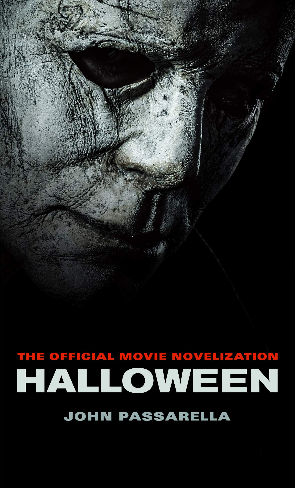

Ya huele a HALLOWEEN!!!
Nosotras creemos que el Halloween no debe cancelarse, !Salvémoslo!
Halloween, también conocido como Noche de Brujas o Noche de Víspera de Difuntos, es una celebración moderna resultado del sincretismo originado por la cristianización de la fiesta del fin de verano de origen celta llamada Samhain,1234 que perdura en Galicia y otros lugares como fiesta del Magosto.
Se celebra internacionalmente en la noche del 31 de octubre, sobre todo en la angloesfera, como Estados Unidos y en menor medida en otros lugares como España e Iberoamérica.
El día se asocia a menudo con los colores naranja, negro y morado y está fuertemente ligado a símbolos como la jack-o'-lantern. Las actividades típicas de Halloween son el famoso Truco o Trato y las fiestas de disfraces, además de las hogueras, la visita de casas encantadas, las bromas, la lectura de historias de miedo y el visionado de películas de terror. Los elementos que representan este día como los gatos negros, los murciélagos y las arañas tienen sus orígenes en la wicca, una religión neopagana.
A los niños les gusta esta celebracion porque les encanta el DULCE O TRUCO así como vestirse de sus personajes de terror favoritos como lo son: VAMPIROS, DIABLO, LA LLORONA, JASON, CHUcKY, PAYASO ESO, por mencionar algunos.
Películas preferidas del equipo DLYC
| TERROR | |||
|---|---|---|---|
| DANA | LIZBETH | YULISSA | CLARISSA |
|
|
 |
 |
|
Te recomendamos esta lista de peliculas que puedes ver en casa este proxima NOCHE DE BRUJAS
- HALLOWEEN
- Friday 13
- IT